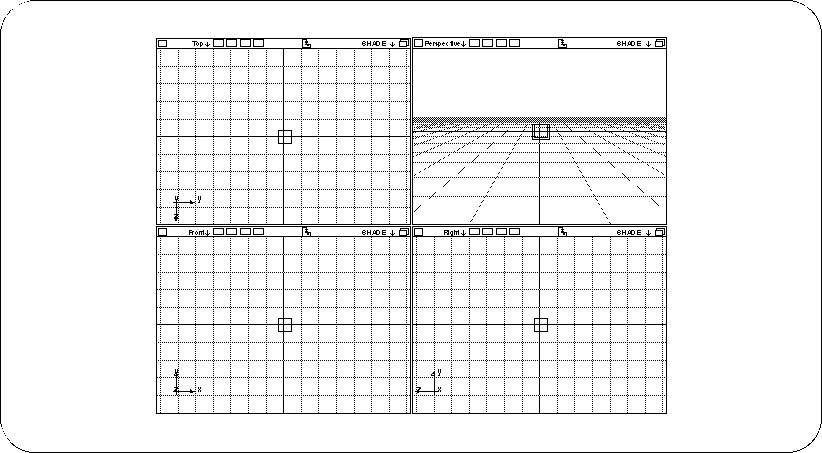

Return to previous page | Return to menu | Go to next page
[Get] → [Primitive] → [Cube]
In the dialog, enter 0.5 in “Length” (length of one side of the cube) and click “OK”. The cube will be displayed as a small wireframe in four windows (Figure 2-2).

If you want to erase a model that has failed,
[Delete] → [Selection]
(Or select an object with the mouse while pressing the “Backspace” key)
You can erase it with.